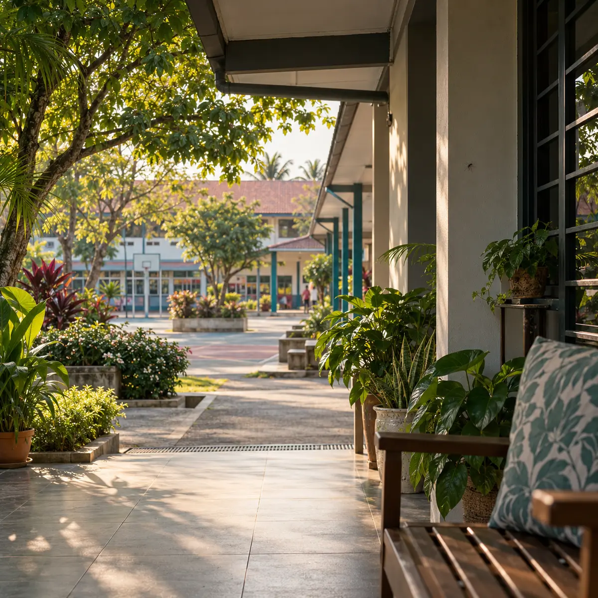
Aktif di ruang harian
Nyamuk Aedes boleh berada berhampiran ruang kediaman, sekolah dan kawasan aktiviti komuniti.
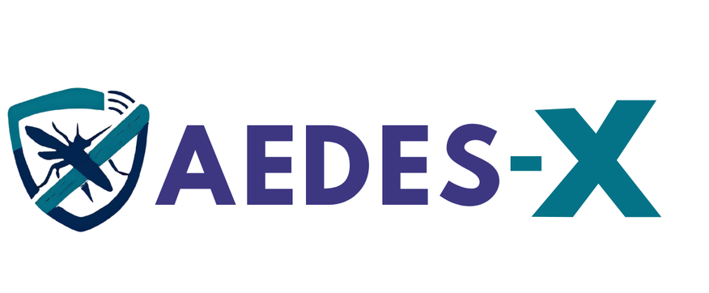
IOT RANGERS · SJKT LADANG RINCHING
Prototaip perangkap nyamuk pintar yang menggabungkan tarikan CO₂, cahaya UV, aliran udara dan kawalan IoT.
ISYARAT TARIKAN
TARIKAN TAMBAHAN
ALIRAN UDARA
01 · CABARAN
Nyamuk Aedes aktif di persekitaran komuniti. Kami mahu membantu mengurangkan pendedahan melalui satu penyelesaian bebas semburan kimia yang mudah dipantau.

Nyamuk Aedes boleh berada berhampiran ruang kediaman, sekolah dan kawasan aktiviti komuniti.
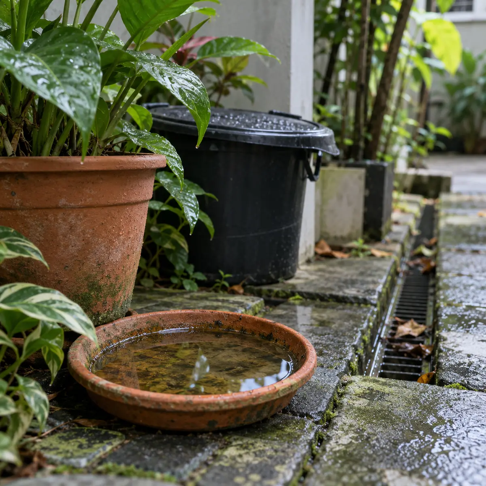
Takungan air kecil dan kawasan terlindung memerlukan pemeriksaan yang teliti serta berulang.
Pemantauan manual sahaja sukar dikekalkan. Komuniti memerlukan tindakan yang lebih mudah dan teratur.
02 · CARA BERFUNGSI
Pilih setiap peringkat untuk melihat bagaimana komponen AEDES-X bekerjasama.
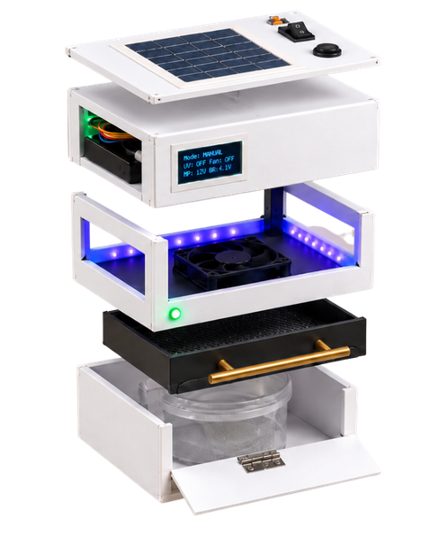
03 · OPERASI FLEKSIBEL
Pilih situasi untuk melihat mod yang paling sesuai.
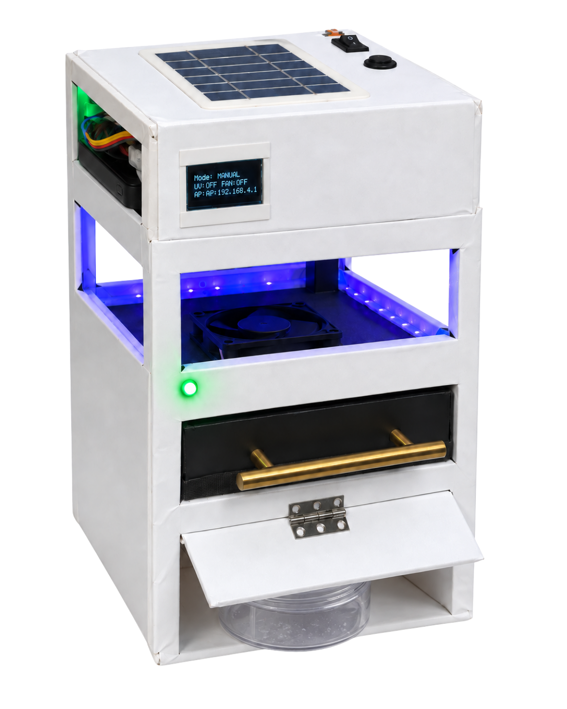
RUMAH · DEMONSTRASI
Kawalan terus melalui papan pemuka atau butang fizikal apabila pengguna mahu menghidupkan dan mematikan sistem sendiri.
04 · KAWALAN BERSAMBUNG
Papan pemuka AEDES-X menyatukan status masa nyata, tiga mod operasi, jadual dan maklumat sistem. Jika hotspot terputus, butang fizikal masih boleh menukar mod.
Peringatan berjadual untuk semakan jaring, penggantian campuran CO₂ dan pemeriksaan sistem—supaya penjagaan lebih konsisten.
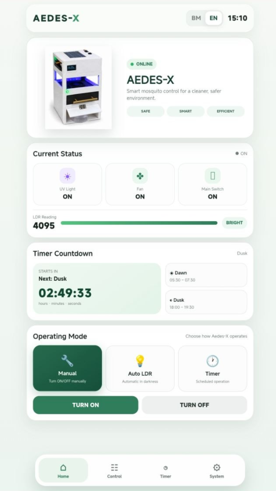
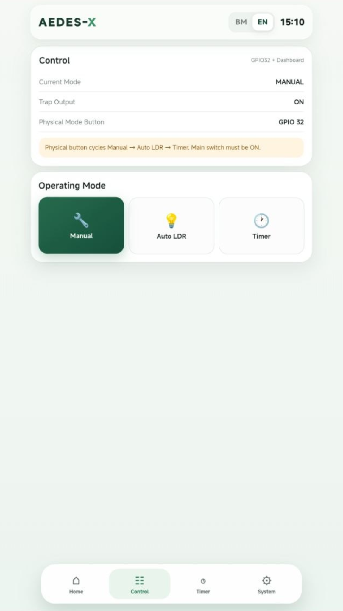
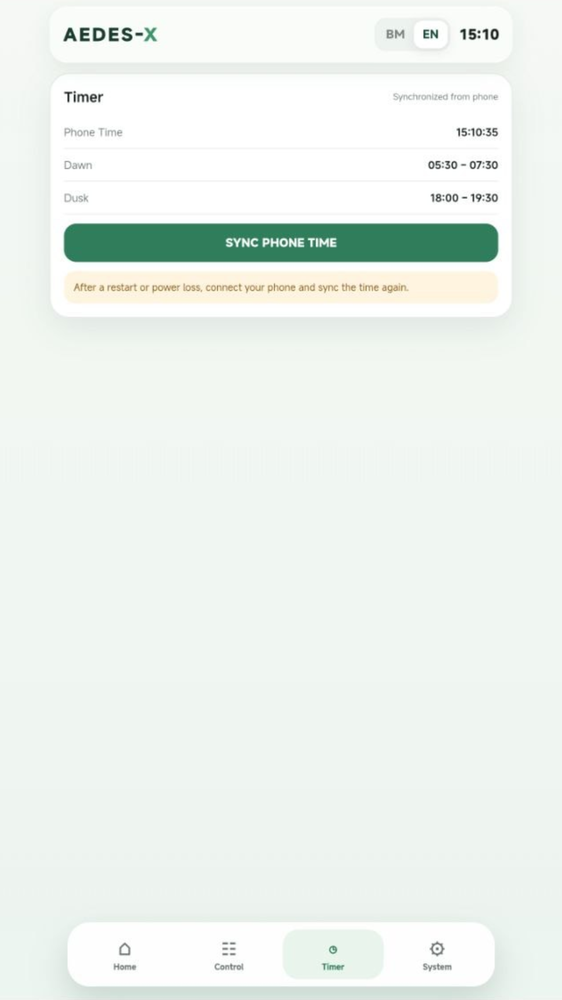
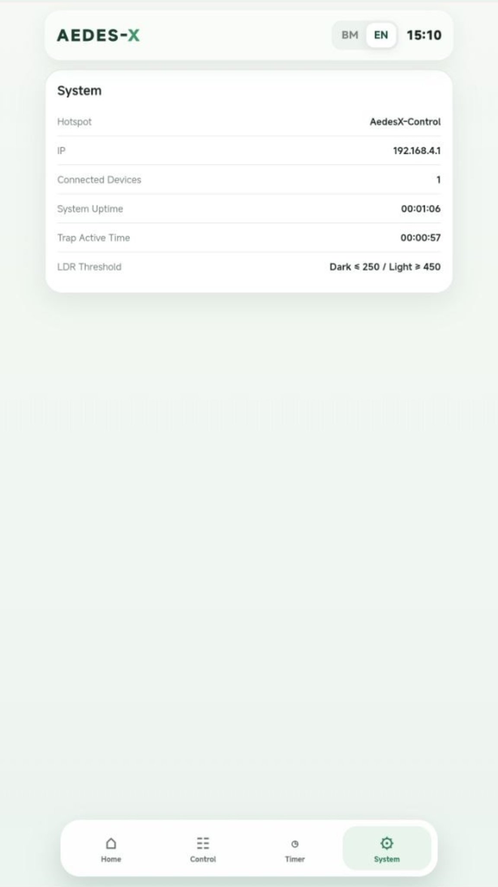
05 · PERBANDINGAN
Pilih kaedah sedia ada untuk melihat perbezaan pendekatan, kawalan dan ciri sistem berbanding prototaip AEDES-X.
Menggabungkan CO₂, UV, aliran udara, tiga mod operasi dan kawalan IoT dalam satu sistem.
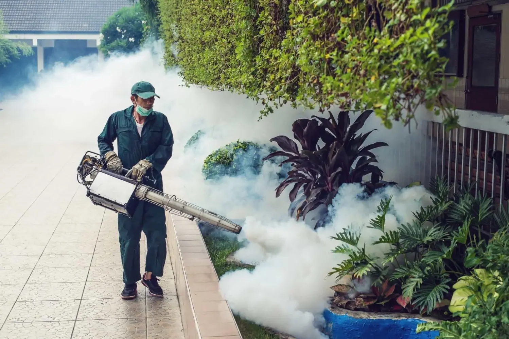
Rawatan kawasan yang lazimnya dijalankan oleh petugas terlatih pada masa tertentu.
AEDES-X direka untuk operasi setempat yang boleh dipantau, manakala fogging ialah rawatan kawasan pada masa tertentu.
Perbandingan ini menerangkan ciri dan cara penggunaan umum—bukan keputusan ujian keberkesanan, tuntutan klinikal atau pengganti langkah pencegahan denggi rasmi.
06 · VALIDASI AWAL
Angka di bawah ialah data sementara untuk demonstrasi laman. Ia mesti diganti dengan keputusan sebenar selepas ujian 10 kali pada 29 September 2026.
Contoh median sambungan; semua contoh di bawah 30 saat.
Contoh masa tindak balas selepas arahan mod.
Contoh tindak balas apabila keadaan cahaya berubah.
Contoh operasi butang fizikal tanpa hotspot.
Belum diuji sehingga isu haba ESP32 dinilai dengan selamat.
07 · INOVASI BERTERASKAN TUJUAN
AEDES-X menghubungkan pembelajaran STEM dengan isu kesihatan sebenar—daripada idea, prototaip dan pengaturcaraan kepada pengujian yang bertanggungjawab.
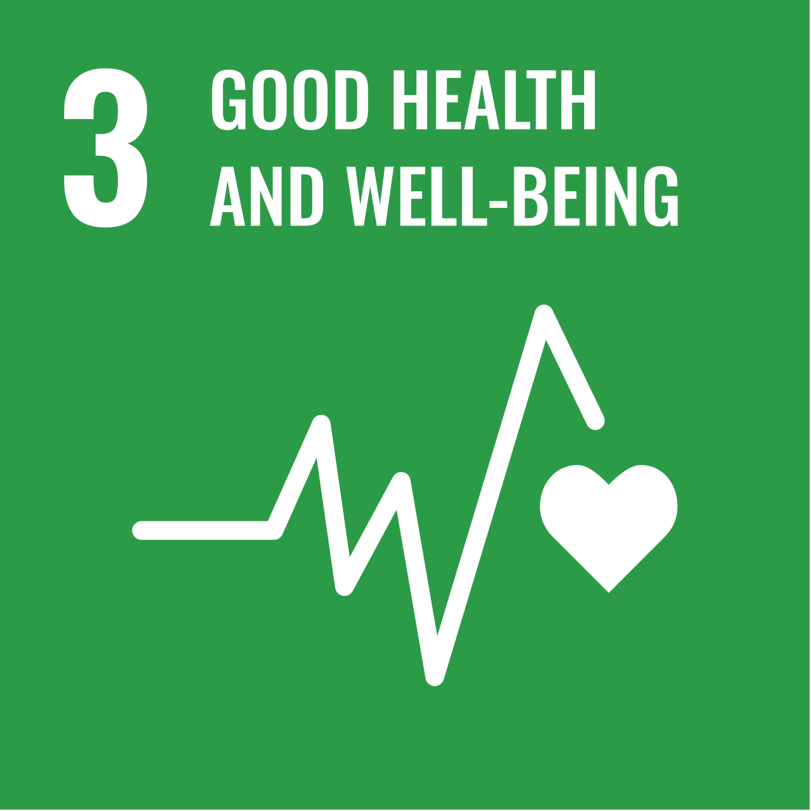
Menyokong kesedaran dan usaha pencegahan denggi dalam komuniti.
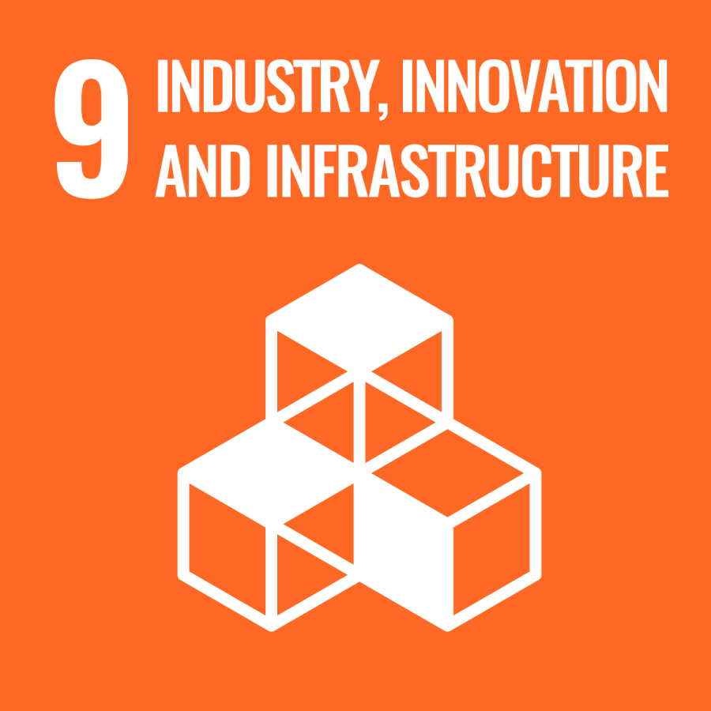
Menggalakkan inovasi IoT yang dibina, diuji dan diterangkan oleh murid.
IOT RANGERS · 2026
Inovasi kecil. Impak yang bermakna.
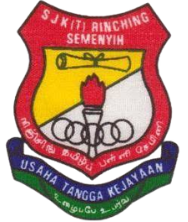